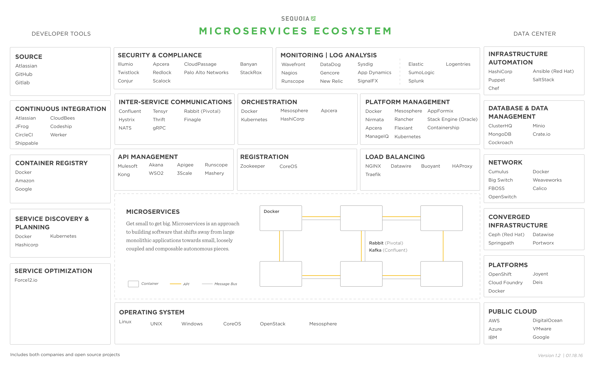
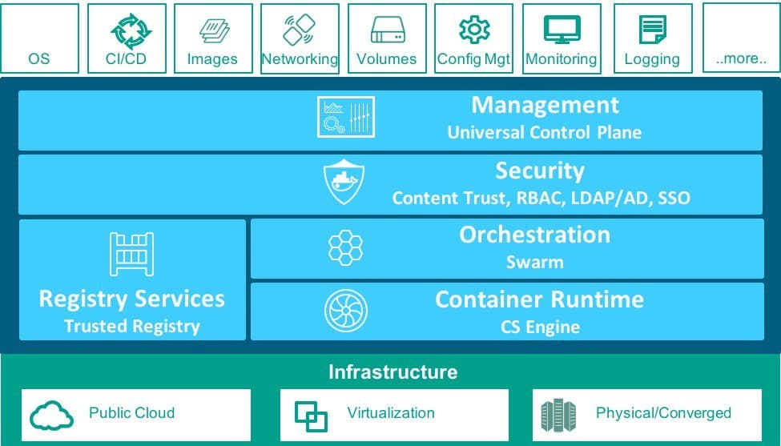

Microservice
Sam Newman: Microservices are not something you should aim for. They are a means to an end. Focus on what's important - building useful software.
Microservice-Ecosystem

source: Get Small To Get Big Through MicroservicesDocker

Deployment Strategy
- Multiple Service Instances per Host Pattern
- Multiple Service Instances
The Scale Cube
- X-axis. horizontal duplication, scale by cloning.
- Y-axis. functional decomposition, scale by splitting different this.
- Z-axis. data partitioning, scale by splitting similar things.
Readings
- Microservice architecture patterns and best practices
- Tecknology Stack
- Service Discovery
- Orchestration
- Architecture
- Scheduler
- Inter-Services Communication
- Serverless
- Others